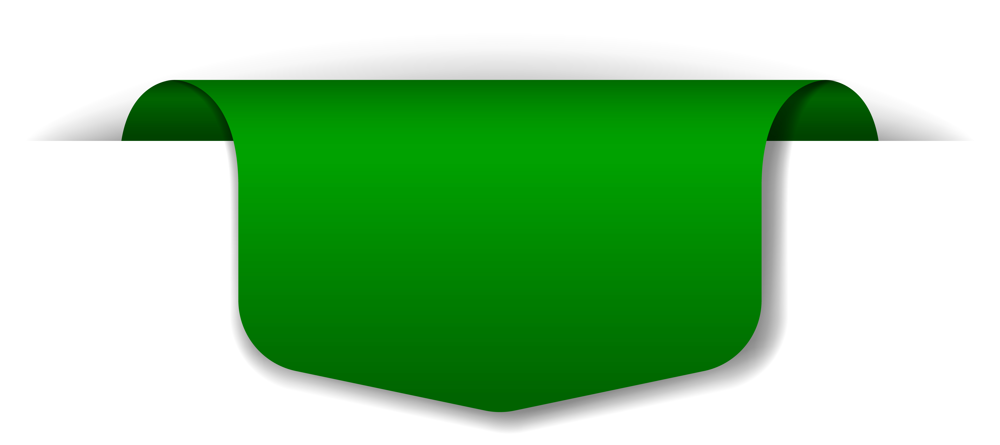

A Inteligência Artificial (IA) e a Robótica representam uma fusão de tecnologias que estão redefinindo nossa interação com o mundo. A IA capacita máquinas a realizar tarefas que exigiriam inteligência humana, enquanto a Robótica constrói dispositivos físicos capazes de interagir autonomamente com o ambiente. Juntas, essas disciplinas impulsionam a automação e a inovação em diversos setores. Embora ofereçam benefícios significativos, também levantam questões éticas e sociais. No entanto, ao compreendermos e navegarmos nesse cenário tecnológico em evolução, podemos moldar um futuro onde humanos e máquinas trabalham em harmonia para alcançar objetivos comuns.
Para Mais Informações Clique no Botao Acima